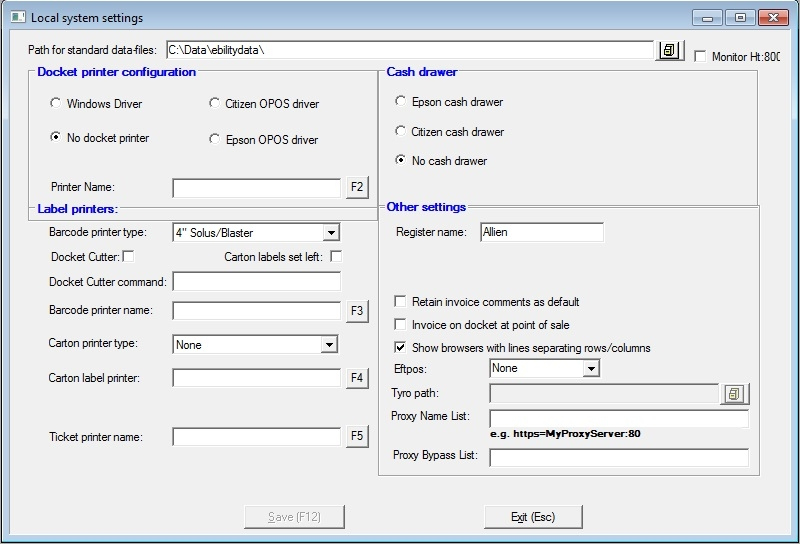

These are local settings stored in the Windows registry and need to be set for each workstation.

Path for standard Data Files
This field shows the path of you Bookscan data files.
Monitor Ht:800
Select if you have a widescreen monitor (16:10 or 16:9)
Docket printer configuration
Almost all users can just use the Windows driver settings here. If you do wish to use Citizen or Epson OPOS drivers, you will first need to install the drivers.
Unless you have "No docket printer" selected, you will need to enter the name of the docket printer in the Printer Name field. You can find the printer name by clicking on the [F2] button and selecting the printer from the drp down list.
Cash drawer
If there is a cash drawer attached to this workstation, you will need to select the appropriate radio button here depending on your printer.
(In Label printers quadrant)
Docket Cutter
If your docket printer has a cutter, you can activate it here.
Docket cutter command
If the default command does not work, you can enter the appropriate command code here.
Barcode Printer Configuration
Barcode printer type
Select the barcode printer type from the drop down list.
Barcode printer name
Enter the printer's name in the Barcode Printer Name field. You can find the printer name by clicking on the [F3] button and selecting the printer from the drp down list.
Carton label printer
If you wish to print carton labels from this workstation, enter the name of the carton label printer here. You can find the printer name by clicking on the Start button in Windows and selecting Printers & Faxes.
Ticket printer
If you are licensed to use the Ticketing module and wish to print tickets from this workstation, enter the name of the ticket printer here. You can find the printer name by clicking on the Start button in Windows and selecting Printers & Faxes.
EFTPOS: If you are using integrated EFTPOS, set the type EFTPOS equipment you are using. Bookscan supports Ingenico, Payment Express and Tyro.
Note that you require a license to use this feature. Contact Barcode Solutions if you are interested in using online EFTPOS.
Tyro/Ingenico/Payment Exp path: Set the path using the browse icon to the Program folder for your integrated EFTPOS provider.
Proxy Name List: If you use a proxy server, set the name here.
Proxy Bypass List: Set the name of the server used to bypass the proxy server here.